<title>Aqua MD</title>
<meta name="claude:viewport-fit-sides" content="cover">
<link rel="preconnect" href="https://fonts.googleapis.com">
<link rel="preconnect" href="https://fonts.gstatic.com" crossorigin>
<link rel="stylesheet" href="https://fonts.googleapis.com/css2?family=Barlow+Semi+Condensed:wght@400;500;600&family=Doto:wght@700;900&family=Michroma&display=swap">
<style>
/* Layout: one centred column of glass panels on the app's dark "desk"; the hero pairs an LCD headline with the
   real app on an Edge-shaped bezel. The whole page is tinted by --h (shell) and --lh (display), like the app. */
@property --h { syntax: "<number>"; inherits: true; initial-value: 214; }
@property --lh { syntax: "<number>"; inherits: true; initial-value: 192; }
:root {
  --h: 214; --lh: 192;
  transition: --h 1.4s cubic-bezier(.4,0,.2,1), --lh 1.4s cubic-bezier(.4,0,.2,1);
  --desk: hsl(calc(var(--h) + 7) 53% 6%);
  --desk-2: hsl(calc(var(--h) + 9) 60% 12%);
  --ink: hsl(var(--h) 100% 95%);
  --ink-dim: hsl(calc(var(--h) + 4) 34% 64%);
  --ink-faint: hsl(calc(var(--h) + 6) 30% 41%);
  --edge: hsl(calc(var(--h) - 5) 100% 79% / .45);
  --lcd: hsl(calc(var(--h) - 2) 82% 7%);
  --lcd-on: hsl(var(--lh) 100% 78%);
  --lcd-hot: hsl(calc(var(--lh) - 3) 100% 96%);
  --lcd-glow: hsl(var(--lh) 100% 72% / .55);
  --lcd-off: hsl(var(--lh) 100% 78% / .1);
  --font-dot: "Doto", "DejaVu Sans Mono", ui-monospace, monospace;
  --font-label: "Michroma", "Eurostile", "Arial Narrow", system-ui, sans-serif;
  --font-body: "Barlow Semi Condensed", "Arial Narrow", system-ui, sans-serif;
  color-scheme: dark;
}
*, *::before, *::after { box-sizing: border-box; }
html { scroll-behavior: smooth; }
body {
  background:
    radial-gradient(1100px 700px at 75% -10%, hsl(var(--h) 80% 50% / .22), transparent 70%),
    radial-gradient(900px 600px at 0% 30%, hsl(var(--h) 90% 60% / .08), transparent 70%),
    linear-gradient(180deg, var(--desk-2), var(--desk) 900px);
  background-color: var(--desk);
  color: var(--ink);
  font-family: var(--font-body);
  font-size: 19px;
  line-height: 1.5;
  padding-left: max(16px, env(safe-area-inset-left, 0px));
  padding-right: max(16px, env(safe-area-inset-right, 0px));
  padding-block: 0 40px;
}
body::before { content: ""; position: fixed; inset: 0 0 auto; height: env(safe-area-inset-top, 0px); z-index: 30; background: var(--desk); }
a { color: var(--lcd-on); }
:focus-visible { outline: 3px solid var(--lcd-on); outline-offset: 3px; border-radius: 8px; }
img { max-width: 100%; display: block; }
.wrap { max-width: 1240px; margin: 0 auto; }

/* ---------- shared pieces from the app ---------- */
.glass {
  position: relative; border-radius: 30px;
  background: linear-gradient(155deg, hsl(calc(var(--h) - 3) 100% 74% / .16) 0%, hsl(calc(var(--h) + 4) 86% 57% / .08) 42%, hsl(calc(var(--h) + 7) 78% 44% / .14) 100%);
  border: 1.5px solid var(--edge);
  box-shadow: inset 0 1.5px 0 rgba(255,255,255,.42), inset 0 -24px 60px hsl(calc(var(--h) + 11) 86% 27% / .32), 0 30px 70px hsl(calc(var(--h) + 9) 100% 6% / .55);
  -webkit-backdrop-filter: blur(14px) saturate(140%); backdrop-filter: blur(14px) saturate(140%);
}
.glass::after { content: ""; position: absolute; inset: 0; border-radius: inherit; pointer-events: none;
  background: linear-gradient(112deg, rgba(255,255,255,.12) 0%, rgba(255,255,255,0) 26%, rgba(255,255,255,0) 72%, rgba(255,255,255,.05) 100%); }
.screws { --s: 14px; }
.screws::before { content: ""; position: absolute; inset: 14px; pointer-events: none;
  background:
    radial-gradient(circle at 7px 7px, hsl(var(--h) 60% 73% / .35) 0 5px, hsl(calc(var(--h) - 5) 100% 87% / .5) 5.5px 6.5px, transparent 7px) left top / 14px 14px no-repeat,
    radial-gradient(circle at 7px 7px, hsl(var(--h) 60% 73% / .35) 0 5px, hsl(calc(var(--h) - 5) 100% 87% / .5) 5.5px 6.5px, transparent 7px) right top / 14px 14px no-repeat,
    radial-gradient(circle at 7px 7px, hsl(var(--h) 60% 73% / .35) 0 5px, hsl(calc(var(--h) - 5) 100% 87% / .5) 5.5px 6.5px, transparent 7px) left bottom / 14px 14px no-repeat,
    radial-gradient(circle at 7px 7px, hsl(var(--h) 60% 73% / .35) 0 5px, hsl(calc(var(--h) - 5) 100% 87% / .5) 5.5px 6.5px, transparent 7px) right bottom / 14px 14px no-repeat; }
.lcd {
  position: relative; overflow: hidden; border-radius: 22px;
  background: radial-gradient(120% 140% at 30% 0%, hsl(calc(var(--h) - 2) 79% 13%), var(--lcd) 60%);
  border: 2px solid hsl(calc(var(--h) - 4) 100% 79% / .35);
  box-shadow: inset 0 0 60px hsl(calc(var(--lh) + 8) 100% 62% / .1), inset 0 2px 0 rgba(255,255,255,.08), 0 0 0 6px hsl(calc(var(--h) + 6) 75% 16% / .35);
}
.lcd::after { content: ""; position: absolute; inset: 0; pointer-events: none; background-image: radial-gradient(hsl(var(--lh) 100% 78% / .05) 1px, transparent 1.4px); background-size: 6px 6px; }
.inds { display: flex; flex-wrap: wrap; gap: 6px 18px; }
.ind { font-family: var(--font-label); font-size: 12px; letter-spacing: .18em; color: var(--lcd-off); white-space: nowrap; }
.ind.on { color: var(--lcd-on); text-shadow: 0 0 10px var(--lcd-glow); }
.dot { font-family: var(--font-dot); font-weight: 900; color: var(--lcd-on); text-shadow: 0 0 18px var(--lcd-glow); }
.label { font-family: var(--font-label); font-size: 12px; letter-spacing: .24em; text-transform: uppercase; color: var(--ink-dim); }
.btn {
  display: inline-flex; align-items: center; justify-content: center; gap: 12px; min-height: 64px; padding: 0 30px;
  border-radius: 22px; border: 1.5px solid hsl(calc(var(--h) - 4) 100% 81% / .6);
  background: linear-gradient(180deg, hsl(calc(var(--h) - 3) 100% 77% / .32), hsl(calc(var(--h) + 4) 86% 57% / .2));
  box-shadow: inset 0 1.5px 0 rgba(255,255,255,.55), inset 0 -8px 18px hsl(calc(var(--h) + 11) 86% 27% / .35), 0 8px 18px hsl(calc(var(--h) + 8) 100% 10% / .45);
  color: var(--ink); font: 600 21px/1.1 var(--font-body); text-decoration: none; cursor: pointer;
  transition: transform .15s ease, box-shadow .25s ease, background .25s ease;
}
.btn:hover { background: linear-gradient(180deg, hsl(calc(var(--h) - 2) 100% 81% / .4), hsl(calc(var(--h) + 4) 89% 59% / .26)); }
.btn:active { transform: translateY(2px) scale(.98); }
.btn.primary { color: var(--lcd-hot); box-shadow: inset 0 1.5px 0 rgba(255,255,255,.55), inset 0 -8px 18px hsl(calc(var(--h) + 11) 86% 27% / .35), 0 0 0 3px hsl(var(--lh) 100% 78% / .35), 0 0 34px hsl(var(--lh) 100% 72% / .35); }
.btn svg { width: 24px; height: 24px; flex: none; fill: none; stroke: currentColor; stroke-width: 2; stroke-linecap: round; stroke-linejoin: round; }
.btn small { font-size: 15px; font-weight: 500; color: var(--ink-dim); }

/* ---------- header ---------- */
.top { position: sticky; top: env(safe-area-inset-top, 0px); z-index: 20; padding-block: 14px; }
.top .bar { display: flex; align-items: center; gap: 18px; padding: 10px 12px 10px 14px; border-radius: 24px; }
.brand { display: flex; align-items: center; gap: 12px; color: var(--ink); text-decoration: none; margin-right: auto; }
.brand img { width: 40px; height: 40px; }
.brand span { font-family: var(--font-label); font-size: 15px; letter-spacing: .26em; white-space: nowrap; }
.nav { display: flex; gap: 6px; }
.nav a { color: var(--ink-dim); text-decoration: none; font-family: var(--font-label); font-size: 12px; letter-spacing: .18em; padding: 10px 12px; border-radius: 12px; }
.nav a:hover { color: var(--ink); background: hsl(var(--h) 90% 60% / .1); }
.top .btn { min-height: 48px; padding: 0 18px; font-size: 18px; border-radius: 16px; }

/* ---------- hero ---------- */
.hero { padding-top: 34px; display: grid; gap: 28px; }
.hero-lcd { padding: 22px 30px 26px; }
.hero-lcd .row { display: flex; justify-content: space-between; gap: 12px; flex-wrap: wrap; }
.hero h1 { margin: 14px 0 0; font-family: var(--font-dot); font-weight: 900; font-size: clamp(64px, 12vw, 150px); line-height: .95; letter-spacing: .01em; color: var(--lcd-on); text-shadow: 0 0 26px var(--lcd-glow); }
.hero .sub { margin: 10px 0 0; font-family: var(--font-dot); font-weight: 700; font-size: clamp(20px, 3vw, 34px); line-height: 1.2; color: var(--lcd-on); opacity: .75; text-wrap: balance; }
.meters { display: grid; gap: 6px; margin-top: 22px; }
.mrow { display: flex; align-items: center; gap: 10px; }
.mrow b { width: 10px; font: 400 11px var(--font-label); color: var(--lcd-on); opacity: .7; }
.segs { display: flex; gap: 4px; flex: 1; max-width: 640px; }
.segs i { flex: 1; height: 10px; border-radius: 2px; background: var(--lcd-off); transition: background .08s, box-shadow .08s; }
.segs i.on { background: var(--lcd-on); box-shadow: 0 0 8px var(--lcd-glow); }
.segs i.on.hot { background: var(--lcd-hot); }
.hero-text { display: grid; grid-template-columns: minmax(0, 1fr) auto; gap: 24px; align-items: end; }
.lead { margin: 0; max-width: 62ch; font-size: 23px; line-height: 1.45; color: var(--ink); opacity: .92; text-wrap: pretty; }
.cta { display: flex; flex-wrap: wrap; gap: 12px; }

.bezel { padding: 14px; border-radius: 30px; background: linear-gradient(180deg, #0d1018, #05070b); border: 1.5px solid hsl(var(--h) 30% 40% / .45); box-shadow: 0 40px 90px hsl(calc(var(--h) + 9) 100% 5% / .7), inset 0 1px 0 rgba(255,255,255,.08); }
.screen { position: relative; border-radius: 14px; overflow: hidden; background: #000; aspect-ratio: 32 / 9; }
.screen img { position: absolute; inset: 0; width: 100%; height: 100%; object-fit: cover; opacity: 0; transition: opacity .9s ease; }
.screen img.on { opacity: 1; }
.colors { display: flex; flex-wrap: wrap; align-items: center; justify-content: center; gap: 12px 14px; margin-top: 18px; }
.colors .label { margin-right: 6px; }
.sw { width: 48px; height: 48px; border-radius: 50%; cursor: pointer; border: 2px solid hsl(calc(var(--sh) - 5) 100% 85% / .75);
  background: radial-gradient(circle at 36% 30%, hsl(var(--sh) 100% 88% / .95), hsl(var(--sh) 90% 58% / .6) 55%, hsl(var(--sh) 85% 38% / .75));
  box-shadow: inset 0 2px 0 rgba(255,255,255,.5), 0 4px 12px rgba(0,0,0,.35); transition: transform .15s, box-shadow .25s; }
.sw:active { transform: scale(.94); }
.sw[aria-pressed="true"] { box-shadow: inset 0 2px 0 rgba(255,255,255,.5), 0 0 0 4px var(--desk), 0 0 0 7px hsl(var(--sh) 100% 75%), 0 0 22px hsl(var(--sh) 100% 65% / .6); }
.cname { min-width: 6ch; font-family: var(--font-label); font-size: 12px; letter-spacing: .2em; color: var(--lcd-on); }

/* ---------- sections ---------- */
section { scroll-margin-top: 110px; }
.sec { margin-top: 110px; }
.sec-head { display: grid; gap: 10px; max-width: 760px; margin-bottom: 30px; }
.sec-head h2 { margin: 0; font-family: var(--font-label); font-weight: 400; font-size: clamp(26px, 3.4vw, 40px); line-height: 1.2; letter-spacing: .06em; text-wrap: balance; }
.sec-head p { margin: 0; color: var(--ink-dim); font-size: 21px; max-width: 62ch; }

.features { display: grid; grid-template-columns: repeat(3, minmax(0, 1fr)); gap: 20px; }
.feat { padding: 24px 26px 26px; display: flex; flex-direction: column; gap: 12px; min-width: 0; }
.chip { align-self: flex-start; display: flex; flex-wrap: wrap; gap: 4px 14px; padding: 6px 12px; border-radius: 10px; }
.chip .ind { font-size: 11px; }
.feat h3 { margin: 4px 0 0; font-size: 27px; font-weight: 600; line-height: 1.2; }
.feat p { margin: 0; color: var(--ink-dim); font-size: 19px; }
.feat ul { margin: 0; padding-left: 20px; color: var(--ink-dim); font-size: 18px; }

.tabs { display: flex; flex-wrap: wrap; gap: 10px; margin-bottom: 18px; }
.tab { min-height: 52px; padding: 0 20px; font-family: var(--font-label); font-size: 12px; letter-spacing: .18em; }
.tab[aria-selected="true"] { color: var(--lcd-hot); box-shadow: inset 0 1.5px 0 rgba(255,255,255,.55), 0 0 0 3px hsl(var(--lh) 100% 78% / .35), 0 0 26px hsl(var(--lh) 100% 72% / .3); }
.shot { position: relative; border-radius: 14px; overflow: hidden; background: #000; aspect-ratio: 2000 / 562; }
.shot img { width: 100%; height: 100%; object-fit: cover; }
.caption { margin: 16px 4px 0; color: var(--ink-dim); font-size: 19px; max-width: 70ch; }

.windows { display: grid; grid-template-columns: minmax(0, 2.2fr) minmax(0, 1fr); gap: 20px; align-items: start; }
.win { padding: 12px; border-radius: 22px; }
.win .tb { display: flex; align-items: center; gap: 8px; padding: 2px 6px 10px; }
.win .tb i { width: 11px; height: 11px; border-radius: 50%; background: hsl(var(--h) 40% 60% / .45); }
.win .tb span { margin-left: 8px; font-family: var(--font-label); font-size: 11px; letter-spacing: .16em; color: var(--ink-dim); }
.win img { border-radius: 10px; width: 100%; }
.win figcaption { margin: 12px 6px 4px; font-size: 18px; color: var(--ink-dim); }

.spot { display: grid; grid-template-columns: minmax(0, 1.1fr) minmax(0, 1fr); gap: 20px; }
.spot .panel { padding: 28px 30px; display: grid; gap: 16px; align-content: start; }
.status { display: grid; gap: 14px; }
.st { display: grid; grid-template-columns: 16px 1fr; gap: 14px; align-items: start; font-size: 20px; line-height: 1.4; }
.st i { width: 14px; height: 14px; margin-top: 6px; border-radius: 50%; background: var(--lcd-on); box-shadow: 0 0 10px var(--lcd-glow); }
.st i.warn { background: #ffcf7a; box-shadow: 0 0 10px rgba(255,207,122,.5); }
.st b { font-weight: 600; }
.st span { color: var(--ink-dim); }

.dl { padding: 30px; display: grid; grid-template-columns: minmax(0, 1fr) minmax(0, 1fr); gap: 30px; }
.dl-lcd { padding: 20px 24px 22px; display: grid; gap: 10px; align-content: start; }
.dl-lcd .file { font-family: var(--font-dot); font-weight: 900; font-size: clamp(22px, 2.6vw, 34px); line-height: 1.15; color: var(--lcd-on); text-shadow: 0 0 16px var(--lcd-glow); overflow-wrap: anywhere; }
.dl-lcd .meta { font-family: var(--font-dot); font-weight: 700; font-size: 22px; color: var(--lcd-on); opacity: .7; }
.dl-main { display: grid; gap: 18px; align-content: start; }
.dl-main .btn { width: 100%; min-height: 76px; font-size: 24px; }
.steps { list-style: none; margin: 0; padding: 0; display: grid; gap: 14px; counter-reset: s; }
.steps li { display: grid; grid-template-columns: 54px 1fr; gap: 14px; align-items: start; font-size: 20px; line-height: 1.4; }
.steps li::before { counter-increment: s; content: counter(s, decimal-leading-zero); font-family: var(--font-dot); font-weight: 900; font-size: 34px; line-height: 1; color: var(--lcd-on); text-shadow: 0 0 12px var(--lcd-glow); }
.steps b { font-weight: 600; }
.note { margin: 0; color: var(--ink-dim); font-size: 18px; }
.os { display: flex; flex-wrap: wrap; gap: 8px 22px; margin-top: 6px; }

footer { margin-top: 90px; padding-top: 26px; border-top: 1px solid hsl(calc(var(--h) - 5) 100% 79% / .18); display: grid; gap: 8px; color: var(--ink-faint); font-size: 17px; }
footer p { margin: 0; max-width: 90ch; }

@media (max-width: 980px) {
  .features { grid-template-columns: repeat(2, minmax(0, 1fr)); }
  .spot, .dl, .windows { grid-template-columns: minmax(0, 1fr); }
  .hero-text { grid-template-columns: minmax(0, 1fr); }
  .nav { display: none; }
}
@media (max-width: 620px) {
  body { font-size: 18px; }
  .features { grid-template-columns: minmax(0, 1fr); }
  .hero-lcd { padding: 18px 18px 20px; }
  .lead { font-size: 20px; }
  .bezel { padding: 8px; border-radius: 18px; }
  .screen { border-radius: 10px; }
  .sw { width: 42px; height: 42px; }
  .dl { padding: 18px; }
  .sec { margin-top: 80px; }
  .top .btn span.long { display: none; }
  .brand span { font-size: 13px; letter-spacing: .2em; }
}
@media (prefers-reduced-motion: reduce) {
  :root { transition: none; }
  html { scroll-behavior: auto; }
  .screen img { transition: none; }
}
</style>

<header class="top wrap">
  <div class="bar glass">
    <a class="brand" href="#top" aria-label="Aqua MD, back to top">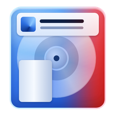<span>AQUA MD</span></a>
    <nav class="nav" aria-label="Sections">
      <a href="#features">FEATURES</a>
      <a href="#widgets">WIDGETS</a>
      <a href="#spotify">SPOTIFY</a>
      <a href="#download">DOWNLOAD</a>
    </nav>
    <a class="btn primary" href="#download"><svg viewBox="0 0 24 24" aria-hidden="true"><path d="M12 4v11M7 10.5l5 5 5-5M5 20h14"/></svg><span class="long">Download</span></a>
  </div>
</header>

<main class="wrap" id="top">
  <section class="hero" aria-labelledby="h1">
    <div class="hero-lcd lcd">
      <div class="row">
        <div class="inds"><span class="ind on">LINUX</span><span class="ind">WINDOWS</span><span class="ind">MACOS</span></div>
        <div class="inds"><span class="ind on">APPIMAGE</span><span class="ind on">V0.4.0</span></div>
      </div>
      <h1 id="h1">AQUA MD</h1>
      <p class="sub">A see-through MiniDisc deck for your desktop</p>
      <div class="meters" aria-hidden="true">
        <div class="mrow"><b>L</b><div class="segs" id="segL"></div></div>
        <div class="mrow"><b>R</b><div class="segs" id="segR"></div></div>
      </div>
    </div>

    <div class="hero-text">
      <p class="lead">Aqua MD plays Spotify, your own music and the sound from your videos on a glass deck that spins, glows and scrolls song titles across a dot-matrix display. Widgets take turns on the side. It was made for the Corsair Xeneon Edge, and it fits any window too.</p>
      <div class="cta">
        <a class="btn primary" href="#download"><svg viewBox="0 0 24 24" aria-hidden="true"><path d="M12 4v11M7 10.5l5 5 5-5M5 20h14"/></svg>Download for Linux</a>
        <a class="btn" href="#features">See what it does</a>
      </div>
    </div>

    <figure style="margin:0">
      <div class="bezel">
        <div class="screen" id="screen">
          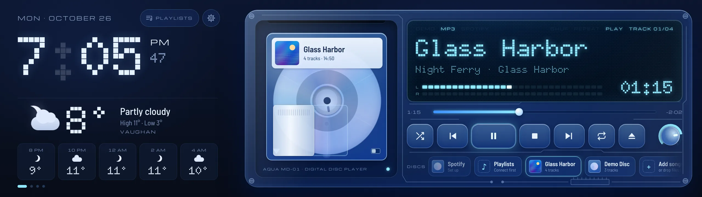
          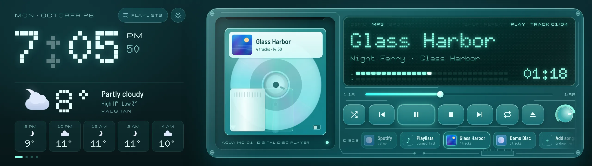
          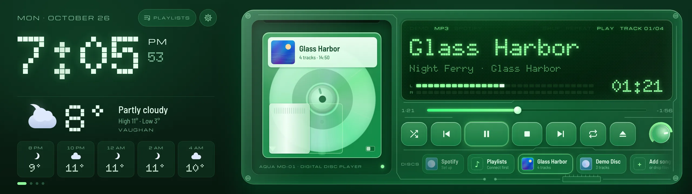
          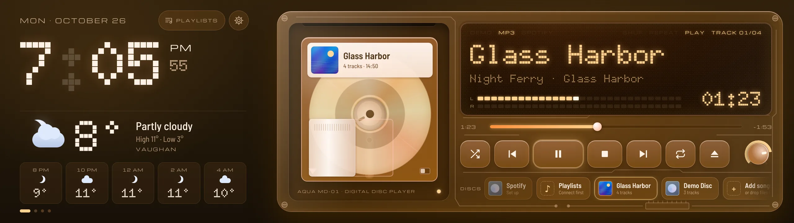
          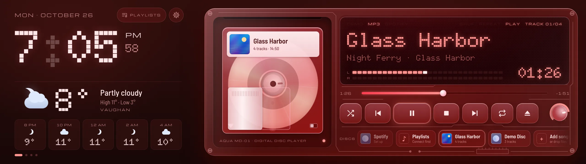
          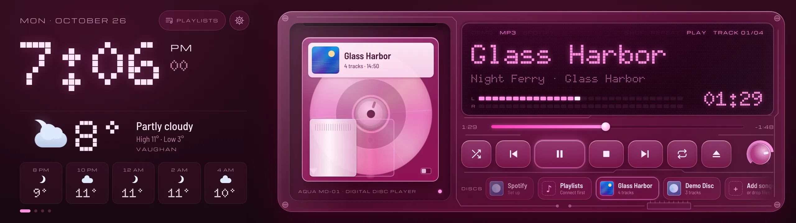
          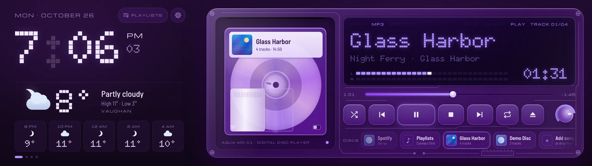
        </div>
      </div>
      <div class="colors" role="group" aria-label="Try a colour">
        <span class="label">Try a colour</span>
        <button class="sw" type="button" data-c="blue" aria-label="Blue" aria-pressed="true"></button>
        <button class="sw" type="button" data-c="teal" aria-label="Teal" aria-pressed="false"></button>
        <button class="sw" type="button" data-c="green" aria-label="Green" aria-pressed="false"></button>
        <button class="sw" type="button" data-c="orange" aria-label="Orange" aria-pressed="false"></button>
        <button class="sw" type="button" data-c="red" aria-label="Red" aria-pressed="false"></button>
        <button class="sw" type="button" data-c="pink" aria-label="Pink" aria-pressed="false"></button>
        <button class="sw" type="button" data-c="purple" aria-label="Purple" aria-pressed="false"></button>
        <span class="cname" id="cname" aria-live="polite">BLUE</span>
      </div>
    </figure>
  </section>

  <section class="sec" id="features" aria-labelledby="f-h">
    <div class="sec-head">
      <span class="label">Features</span>
      <h2 id="f-h">Everything plays through one deck</h2>
      <p>Put a disc in and it slides into the bay, the shutter opens and the display reads its table of contents, like a real deck.</p>
    </div>
    <div class="features">
      <article class="feat glass">
        <div class="chip lcd"><span class="ind on">SPOTIFY</span></div>
        <h3>Spotify, built in</h3>
        <p>Log in once and Aqua MD plays Spotify by itself. It also shows up as a speaker in the Spotify app on your phone.</p>
      </article>
      <article class="feat glass">
        <div class="chip lcd"><span class="ind on">MP3 · FLAC · MP4 · MOV</span></div>
        <h3>Your own music</h3>
        <p>Drop in songs or whole folders. Each album becomes its own disc, with its cover on the label. Video files play their sound only.</p>
      </article>
      <article class="feat glass">
        <div class="chip lcd"><span class="ind on">7 COLOURS</span></div>
        <h3>A colour for every disc</h3>
        <p>Give a playlist or album its own colour and the whole app fades to it while it plays. Blue is home.</p>
      </article>
      <article class="feat glass">
        <div class="chip lcd"><span class="ind on">PAGES</span></div>
        <h3>Widgets that take turns</h3>
        <p>Clock, weather, lyrics, now playing, up next, system stats and a calendar, on pages that slide by every few seconds.</p>
      </article>
      <article class="feat glass">
        <div class="chip lcd"><span class="ind on">LYRICS</span></div>
        <h3>Lyrics that follow along</h3>
        <p>The line being sung lights up. Lyrics come from a .lrc file next to your song, the song file itself, or the free LRCLIB library.</p>
      </article>
      <article class="feat glass">
        <div class="chip lcd"><span class="ind on">2560 × 720</span><span class="ind on">ANY WINDOW</span></div>
        <h3>Edge first, any window after</h3>
        <p>Full screen on the Xeneon Edge, or a normal window you can drag to any size. Bigger windows fit more widgets.</p>
      </article>
    </div>
  </section>

  <section class="sec" id="widgets" aria-labelledby="w-h">
    <div class="sec-head">
      <span class="label">Widgets</span>
      <h2 id="w-h">Pick your pages</h2>
      <p>Each page holds up to three widgets on the Edge. Swipe to change pages, or let them switch by themselves.</p>
    </div>
    <div class="tabs" role="tablist" aria-label="Widget pages">
      <button class="btn tab" role="tab" id="t-lyrics" aria-controls="p-shot" aria-selected="true" data-shot="lyrics">LYRICS</button>
      <button class="btn tab" role="tab" id="t-now" aria-controls="p-shot" aria-selected="false" data-shot="now-next">NOW PLAYING</button>
      <button class="btn tab" role="tab" id="t-system" aria-controls="p-shot" aria-selected="false" data-shot="system">SYSTEM</button>
      <button class="btn tab" role="tab" id="t-settings" aria-controls="p-shot" aria-selected="false" data-shot="settings">SETTINGS</button>
    </div>
    <div class="bezel" role="tabpanel" id="p-shot" aria-labelledby="t-lyrics">
      <div class="shot">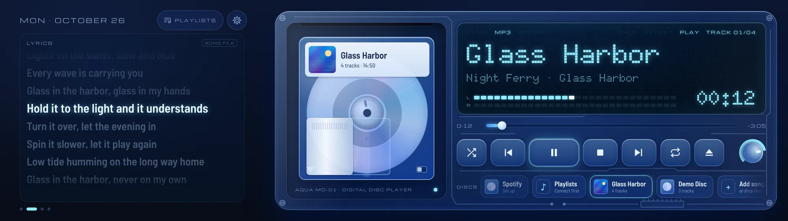</div>
    </div>
    <p class="caption" id="shotCap">Lyrics scroll with the song. The line being sung glows; the tag in the corner says where the lyrics came from.</p>
  </section>

  <section class="sec" aria-labelledby="r-h">
    <div class="sec-head">
      <span class="label">Any window</span>
      <h2 id="r-h">Make it bigger, fit more</h2>
      <p>Wide screens keep the Edge layout. Other shapes put the deck on top and fill the rest with widgets, in as many columns as fit.</p>
    </div>
    <div class="windows">
      <figure class="win glass" style="margin:0">
        <div class="tb" aria-hidden="true"><i></i><i></i><i></i><span>1920 × 1080</span></div>
        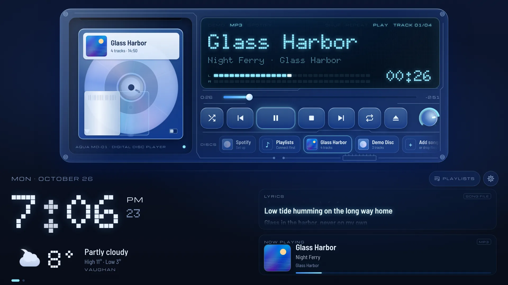
        <figcaption>A normal monitor fits four widgets per page.</figcaption>
      </figure>
      <figure class="win glass" style="margin:0">
        <div class="tb" aria-hidden="true"><i></i><i></i><i></i><span>TALL</span></div>
        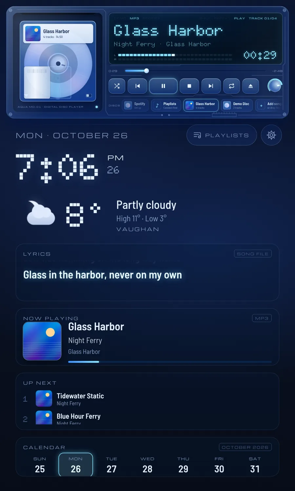
        <figcaption>A tall window stacks six.</figcaption>
      </figure>
    </div>
  </section>

  <section class="sec" id="spotify" aria-labelledby="s-h">
    <div class="sec-head">
      <span class="label">Spotify</span>
      <h2 id="s-h">Your playlists, on a disc</h2>
      <p>Open the Playlists menu, tap one and it goes into the deck. The shuffle button next to it starts on a random song.</p>
    </div>
    <div class="spot">
      <div class="panel glass">
        <div class="status">
          <div class="st"><i></i><div><b>Plays by itself.</b> <span>No Spotify app needed once you log in.</span></div></div>
          <div class="st"><i></i><div><b>Controls the Spotify app too.</b> <span>If it’s open, the deck shows and controls what it plays.</span></div></div>
          <div class="st"><i class="warn"></i><div><b>Needs Spotify Premium.</b> <span>Spotify only lets Premium accounts play through other apps.</span></div></div>
          <div class="st"><i class="warn"></i><div><b>Two-minute setup.</b> <span>Settings walks you through making a free Spotify developer app and pasting its Client ID.</span></div></div>
        </div>
      </div>
      <div class="panel glass">
        <div class="lcd" style="padding:18px 22px 20px">
          <div class="inds"><span class="ind">DEMO</span><span class="ind">MP3</span><span class="ind on">SPOTIFY</span></div>
          <div class="dot" style="font-size:clamp(30px,4vw,52px);line-height:1.1;margin-top:10px">SHUFFLE PLAY</div>
          <div class="dot" style="font-weight:700;font-size:clamp(18px,2vw,24px);opacity:.72;margin-top:4px">Pick a playlist · tap shuffle</div>
        </div>
        <p class="note">Spotify plays through Spotify’s official Web Playback SDK.</p>
      </div>
    </div>
  </section>

  <section class="sec" id="download" aria-labelledby="d-h">
    <div class="sec-head">
      <span class="label">Download</span>
      <h2 id="d-h">Get Aqua MD for Linux</h2>
      <p>One file. No installer and no terminal.</p>
    </div>
    <div class="dl glass screws">
      <div class="dl-lcd lcd">
        <div class="inds"><span class="ind on">LINUX</span><span class="ind on">X86_64</span><span class="ind on">V0.4.0</span></div>
        <div class="file">AquaMD-0.4.0-x86_64.AppImage</div>
        <div class="meta">113 MB · AppImage</div>
        <div class="os"><span class="ind on">TESTED ON KUBUNTU</span><span class="ind">WINDOWS: NOT YET</span><span class="ind">MACOS: NOT YET</span></div>
      </div>
      <div class="dl-main">
        <a class="btn primary" id="dlBtn" href="https://github.com/Danii45/Aqua-MD/releases/latest/download/AquaMD-0.4.0-x86_64.AppImage" target="_blank" rel="noopener"><svg viewBox="0 0 24 24" aria-hidden="true"><path d="M12 4v11M7 10.5l5 5 5-5M5 20h14"/></svg>Download for Linux</a>
        <ol class="steps">
          <li><div><b>Download</b> the file. It lands in your Downloads folder.</div></li>
          <li><div><b>Right-click it → Properties → Permissions</b> and tick the box that makes it executable.</div></li>
          <li><div><b>Double-click it.</b> On a Xeneon Edge it opens full screen there by itself.</div></li>
        </ol>
        <p class="note">Built and tested on Kubuntu. Other 64-bit Linux desktops should work too. <a href="https://github.com/Danii45/Aqua-MD/releases" target="_blank" rel="noopener">All versions on GitHub</a></p>
      </div>
    </div>
  </section>

  <footer>
    <p>Aqua MD is a personal project by Daniel. Song names in the screenshots are made up for the demo.</p>
    <p>Not made by or affiliated with Sony, Spotify or Corsair. MiniDisc, Spotify and Xeneon are trademarks of their owners. Lyrics from LRCLIB, weather from Open-Meteo.</p>
  </footer>
</main>

<script>
(() => {
  'use strict';
  const REDUCED = matchMedia('(prefers-reduced-motion: reduce)').matches;
  const root = document.documentElement;
  const COLORS = { blue: [214, 192], teal: [178, 168], green: [140, 128], orange: [26, 36], red: [354, 2], pink: [322, 316], purple: [266, 258] };
  const order = Object.keys(COLORS);
  document.querySelectorAll('.sw').forEach(b => b.style.setProperty('--sh', COLORS[b.dataset.c][0]));

  // Theme: move the whole page to a colour the short way round the wheel, like the app does.
  let hH = 214, hL = 192, cur = 'blue';
  const arc = (from, to) => from + ((((to - from) % 360) + 540) % 360 - 180);
  function setColor(name) {
    if (!COLORS[name] || name === cur) return;
    cur = name;
    hH = arc(hH, COLORS[name][0]); hL = arc(hL, COLORS[name][1]);
    root.style.setProperty('--h', hH.toFixed(1));
    root.style.setProperty('--lh', hL.toFixed(1));
    document.querySelectorAll('#screen img').forEach(i => i.classList.toggle('on', i.dataset.c === name));
    document.querySelectorAll('.sw').forEach(b => b.setAttribute('aria-pressed', String(b.dataset.c === name)));
    document.getElementById('cname').textContent = name.toUpperCase();
  }
  let auto = null;
  const stopAuto = () => { if (auto) { clearInterval(auto); auto = null; } };
  document.querySelector('.colors').addEventListener('click', e => {
    const b = e.target.closest('.sw'); if (!b) return;
    stopAuto(); setColor(b.dataset.c);
  });
  if (!REDUCED) auto = setInterval(() => { if (!document.hidden) setColor(order[(order.indexOf(cur) + 1) % order.length]); }, 4200);

  // Level meters in the headline display.
  const SEG = 32;
  const build = id => { const host = document.getElementById(id); for (let i = 0; i < SEG; i++) { const s = document.createElement('i'); if (i >= SEG - 6) s.className = 'hot'; host.append(s); } return [...host.children]; };
  const L = build('segL'), R = build('segR');
  const lv = [0, 0];
  function paint(segs, v) { const n = Math.round(v * SEG); segs.forEach((s, i) => s.classList.toggle('on', i < n)); }
  if (REDUCED) { paint(L, .55); paint(R, .5); }
  else {
    let last = performance.now();
    (function step(now) {
      const t = now / 1000, dt = Math.min(.05, (now - last) / 1000); last = now;
      [0, 1].forEach(ch => {
        const target = Math.max(0, Math.min(1, .46 + .2 * Math.sin(t * 2.1 + ch * 1.3) * Math.sin(t * .7 + ch) + .18 * Math.abs(Math.sin(t * 7.3 + ch * 2.1)) + (Math.random() - .5) * .1));
        lv[ch] += (target - lv[ch]) * Math.min(1, dt * (target > lv[ch] ? 24 : 6));
      });
      paint(L, lv[0]); paint(R, lv[1]);
      requestAnimationFrame(step);
    })(last);
  }

  // Widget screenshots.
  const SHOTS = {
    'lyrics': ['Lyrics widget with the current line lit up while “Glass Harbor” plays', 'Lyrics scroll with the song. The line being sung glows; the tag in the corner says where the lyrics came from.'],
    'now-next': ['Now Playing with album art above an Up Next list of three songs', 'Now Playing shows the cover big. Up Next lists what’s coming, from your disc or from Spotify’s queue.'],
    'system': ['System widget with CPU, GPU and RAM bars, and a calendar for the week', 'System shows CPU, GPU and memory use with temperatures. The calendar marks today.'],
    'settings': ['Settings panel with page timing buttons and a list of widgets on page 1', 'Build pages in Settings: pick widgets, make them big or small, move them around and choose how often pages switch.']
  };
  const tabs = [...document.querySelectorAll('.tab')];
  const img = document.getElementById('shotImg'), cap = document.getElementById('shotCap'), panel = document.getElementById('p-shot');
  function show(tab) {
    tabs.forEach(t => { const on = t === tab; t.setAttribute('aria-selected', String(on)); t.tabIndex = on ? 0 : -1; });
    const k = tab.dataset.shot;
    img.src = `img/${k}.webp`; img.alt = SHOTS[k][0]; cap.textContent = SHOTS[k][1];
    panel.setAttribute('aria-labelledby', tab.id);
  }
  tabs.forEach((t, i) => {
    t.tabIndex = i === 0 ? 0 : -1;
    t.addEventListener('click', () => show(t));
    t.addEventListener('keydown', e => {
      const d = e.key === 'ArrowRight' ? 1 : e.key === 'ArrowLeft' ? -1 : 0;
      if (!d) return;
      e.preventDefault();
      const n = tabs[(i + d + tabs.length) % tabs.length]; n.focus(); show(n);
    });
  });
  // Warm the other screenshots so switching tabs is instant.
  Object.keys(SHOTS).forEach(k => { const p = new Image(); p.src = `img/${k}.webp`; });
})();
</script>
